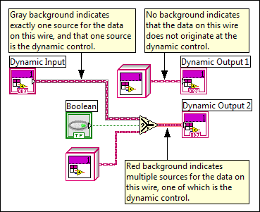
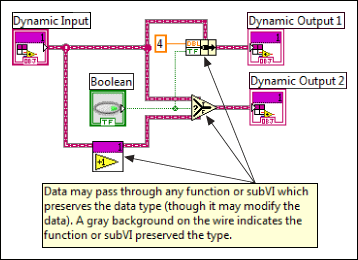

You can modify data between dynamic controls and indicators. However, you must ensure that the data flows to all dynamic indicators.
This error occurs when there is no wire path that leads from the dynamic control to the dynamic indicator. Without such data flow, LabVIEW cannot guarantee the run-time type safety of LabVIEW classes.
LabVIEW class wires that do not originate at a dynamic input have no background wire color. The background color of the wire is gray for any wire that originates at a dynamic input and does not pass through any functions that can change the run-time data type. A red background indicates multiple sources for the data on the wire, one of which is the dynamic input terminal.
To correct this error, ensure that there is a wire path between the dynamic input and output front panel terminals.
